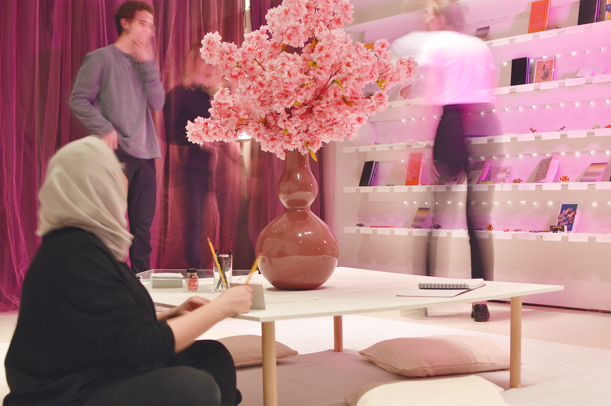

Give and Take
North Gallery Exhibition, Yale School of Architecture
March 28–April 9, 2022
Curation: Katie Colford, Clare Fentress, Dilara Karademir
Graphic Design: Claire Hungerford, Betty Wang
Eschewing the white-cube presentations that typically occur within architectural contexts, Give and Take—a two-week-long installation at the Yale School of Architecture’s North Gallery—is instead a participatory environment. It transforms the North Gallery into a new type of room solely for giving and receiving gifts, positing reciprocity, pleasure, and delight as key aspects of academic and intellectual life. Every School of Architecture student is invited by name to participate, and their engagement shapes the slow unfolding of the room over the course of the installation. By eliding the distinction between curator and visitor, Give and Take quietly challenges the competitive, hierarchical nature of architectural education and offers a counterpoint rooted in feminist praxes and relational aesthetics.
Sponsors: Women Faculty Forum, Yale School of Architecture Exhibitions Fund
Donors: Aldrich Contemporary Art Museum, American Folk Art Museum, Artist & Craftsman Supply, Bard Graduate Center, Beinecke Rare Book & Manuscript Library, Center for Collaborative Arts and Media, FABSCRAP, Grey Matter Books, Haas Family Arts Library, Hull’s Art Supply & Framing, Josef and Anni Albers Foundation, MoMA PS1, Noguchi Museum, Princeton Architectural Press, Princeton University Press, Schomburg Center for Research in Black Culture, University of Minnesota Press, Wadsworth Atheneum Museum of Art, Yale Center for British Art, Yale School of Architecture, Yale University Art Gallery, Yale University Library, Yale University Press
Shimmering curtains transformed the North Gallery—a student-curated space within the Yale School of Architecture Gallery—into a private room.
A vestibule beckoned the visitor inside.
The room offered color, somewhere to sit, somewhere to pause—and something more.
Within the room, namecards for every student at the school hung on rows of shelves. On the first day of the installation, a gift sat in front of each name. Gifts were replenished every day.
The room was not the only gift-giver. By the third day, the shelves were lined with objects from one student to antoher: notes, poems, marbles, rocks, paper flowers, half-eaten cookies, money, sealed packages, phone numbers—

—an informal gift economy whose circulation routes left digital tracks.
Sometimes, the room received more than a hundred visitors a day.
After two weeks, it was time for the room to say goodbye.
